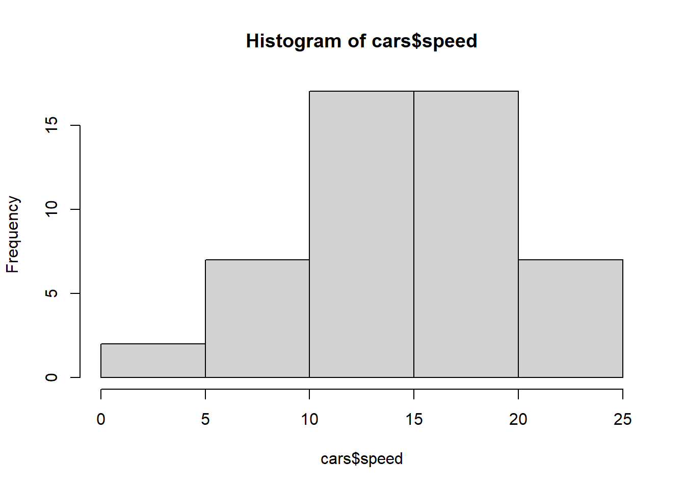

Quarto enables you to weave together content and executable code into a finished document. To learn more about Quarto see https://quarto.org.
Running Code
When you click the Render button a document will be generated that includes both content and the output of embedded code. You can embed code like this:
1+1
[1] 2
5+7
[1] 12
summary(cars)
speed dist
Min. : 4.0 Min. : 2.00
1st Qu.:12.0 1st Qu.: 26.00
Median :15.0 Median : 36.00
Mean :15.4 Mean : 42.98
3rd Qu.:19.0 3rd Qu.: 56.00
Max. :25.0 Max. :120.00
hist(cars$speed)

Code chunk options
Your Quarto is broken up into ‘code’ chunks and text or ‘markdown’ chunks. Making nice looking Quarto documents means understanding how to format your code chunks and markdown chunks appropriately.